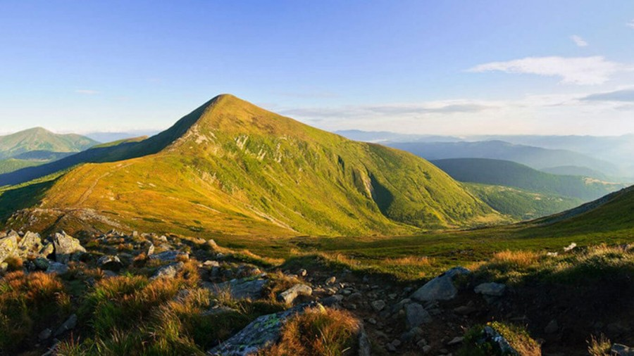
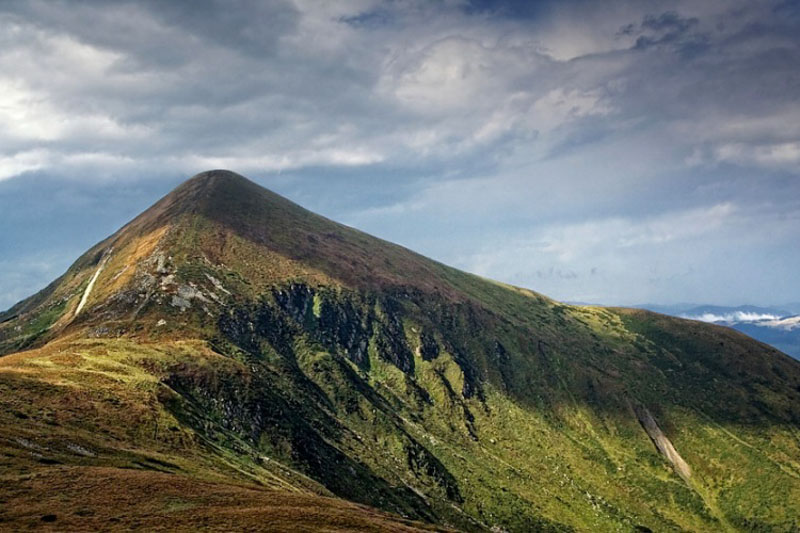
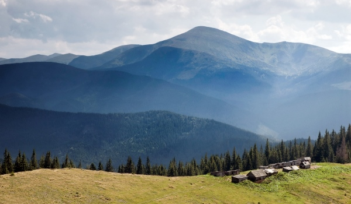
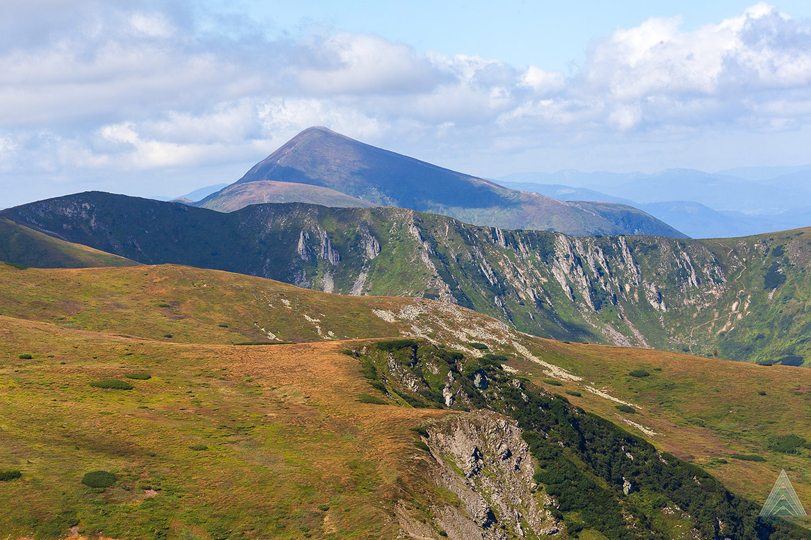

Загальна інформація:
- Назва гори - Говерла
- Локація - Карпати, Україна
- Висота - 2061 метр
- Маршрути - Чорногорський хребет, Західний підхід
- Клімат - Помірний, холодні зими
Гора Говерла, перлина Карпат і найвища точка України, є одним з найвідоміших місць серед прихильників активного відпочинку. Її висота складає 2061 метр над рівнем моря, що робить її неперевершеною у своїй красі і грандіозності. Говерла втілює собою справжній дух українських Карпат і чарівність цього місця.
Історія гори Говерла насичена різними легендами та історіями. Слово “Говерла” походить від угорського “hóvár” – “снігова гора”. За легендою, першими, хто піднявся на Говерла, були герцоги Корятовичі у XIV столітті. Сучасна історія підкорення гори починається з 19 століття, коли у 1880 році австрійський імператор Франц Йосиф I організував експедицію для підйому на Говерлу.
Відвідування Говерли є чудовою можливістю відчути справжній дух пригоди та зануритися в неповторну красу природи. Ви будете милуватися захоплюючими панорамами, крізь які проступає незабутній карпатський пейзаж. Крім того, підйом на Говерлу дозволяє відчути глибокий шанобливий стосунок до природи, подолати власні обмеження і відчути себе частиною чогось надзвичайно великого.
Неодмінно відвідайте гору Говерла, щоб відкрити для себе справжню красу українських Карпат, підкорити свою першу двотисячник та отримати незабутній досвід!
Основна інформація про Говерлу
Гора Говерла – це височайша вершина України та Карпатських гір, висота якої становить 2061 метр над рівнем моря. Вона є головною визначною пам’яткою Чорногірського хребта, що простягається у західному напрямку від гори.
Географічно Говерла розташована в Закарпатській області України, на межі Івано-Франківської та Закарпатської областей, між річками Притиса та Чорний Черемош. Піднімаючись на Говерлу, ви зможете побачити чудові панорами Карпатських гір, які розкриваються з її вершини.
Щодо кліматичних особливостей гори Говерла, вона характеризується суворим гірським кліматом. Температура та погодні умови сильно варіюють в залежності від сезону та висоти. Зимою вершина гори часто покрита снігом, температура може опускатися до мінус 20 градусів Цельсія, а вітер дуже сильний. Літом температура зазвичай коливається від +5 до +15 градусів Цельсія. Однак навіть влітку вище в горах може бути доволі прохолодно, особливо вночі. Осади випадають протягом всього року, і туман не є рідкістю, тому при плануванні походу на Говерлу важливо врахувати ці фактори.
Підготовка до походу
Підйом на гору Говерла – це пригода, яка вимагає певної підготовки. Враховуючи кліматичні особливості та фізичні вимоги, наступні поради допоможуть вам краще підготуватися до цієї подорожі.
Оптимальний час для підйому на Говерлу
Найкращий період для підйому на Говерлу – це літні місяці, з червня по вересень. У цей час рік температура більш поміркована, і ризик зустріти снігові замети значно нижчий. Однак враховуйте, що літо – це також сезон дощів, тому важливо бути готовим до можливих змін погоди.
Список необхідного спорядження
Підйом на гору Говерла вимагає певного спорядження. Ось список основного:
-
Трекінгове взуття: Ви будете проходити по гористій місцевості, тому вам потрібне взуття, що добре тримає
ногу і має гарну протиковзну підошву.
Бажані категорії взуття:
-
Категорія A:
-
Використання взуття: Ідеально підходить для найкоротших походів і подорожей, без великих навантажень, взуття переважно до щиколотки
-
Характеристика: М'яке взуття, гнучка тонша підошва Різноманітність матеріалів, переважно поєднання шкіри та штучних матеріалів.
-
-
Категорія A/B:
-
Характеристика: Жорсткіше за A черевики, з більш твердою підошвою.
-
-
Категорія B:
-
Використання взуття: Типові легкі трекінгові черевики, хороше співвідношення ваги та продуктивності, зазвичай високі черевики. Трекінг з легким рюкзаком.
-
Характеристика: Фіксована щиколотка, міцне взуття.
-
-
Категорія A:
-
Одяг: Вам потрібен шаруватий одяг, що дозволить вам пристосуватися до змін погоди. Не забудьте про куртку від дощу та капелюх від сонця.
-
Рюкзак: Оберіть зручний рюкзак для перенесення води, їжі та іншого необхідного спорядження. Якщо плануєте подорож з ночівлею, то рекомендуємо брати рюкзак не менше 40 літрів.
-
Їжа та вода: Беріть з собою достатньо води та енергетичних закусок. Кількість залежить від тривалості походу. На одну особу має бути не менше 3 літрів води на людину.
-
Навігаційне обладнання: Карта маршруту та компас, або GPS-навігатор, якщо ви маєте такий.
-
Медичний набір: Завжди мати при собі базовий медичний набір на випадок невеликих порізів або ударів.
Рекомендації щодо фізичної підготовки
Підйом на Говерлу вимагає від вас певної фізичної підготовки. Навіть якщо ви не вважаєте себе спортсменом, кілька тижнів тренувань перед походом можуть значно полегшити вашу подорож.
-
Витривалість: Підйом на гору Говерла займає в середньому 6-9 годин. Тренуйте свою витривалість з довгими прогулянками або бігом.
-
Сила ніг: Ваші ноги будуть виконувати основну роботу під час підйому. Силові тренування для ніг допоможуть вам легше подолати висоту.
-
Розтяжка: Регулярні вправи на розтяжку допоможуть уникнути розтягнень та забезпечать більшу гнучкість.
-
Гідрація та харчування: Навчіться пити достатньо води і їсти енергетичні продукти перед тренуваннями та під час них.
Не забувайте, що кожна особа унікальна, і те, що працює для однієї людини, може не працювати для іншої. Розпочніть свою підготовку заздалегідь, слухайте своє тіло та не перенапружуйте себе. Головне – насолоджуйтесь своїм пригодам на горі Говерла!
Маршрути на гору Говерла
Підйом на Говерлу можливий декількома маршрутами, кожен з яких має свою унікальність. Ось короткий опис трьох найпопулярніших маршрутів:
-
Маршрут через Заросляк:
Це найбільш популярний маршрут до вершини Говерли. Він починається з туристичної бази Заросляк, проходить через гору Стій та завершується на вершині Говерли. Загальна відстань складає близько 8 км. На цьому маршруті ви зустрінете декілька крутих підйомів, але в цілому він вважається найменш вимогливим з погляду фізичної підготовки.
-
Маршрут через Петрос:
Цей маршрут є складнішим, але також більш захоплюючим. Він проходить через гору Петрос та пропонує чудові панорамні види на Чорногорський хребет. Маршрут доволі вимогливий, особливо в зимовий період, коли на горі Петрос може бути багато снігу.
-
Маршрут через Вороненку:
Цей маршрут є найбільш довгим і вимагає найбільше часу для підйому на Говерлу. Він починається в селі Вороненка та проходить через кілька гірських перевалів. Цей маршрут рекомендується для досвідчених туристів, оскільки він включає в себе круті підйоми і спуски, а також може бути багато снігу в зимовий період.
Кожен маршрут має свої труднощі, включаючи круті підйоми, швидкі зміни погодних умов та потенційно небезпечні участки зі скелями або сніговими полями. Пам’ятайте, що безпека є найважливішою, тому добре підготуйтеся до походу і не ризикуйте, якщо умови виявляються небезпечними. Це особливо важливо, якщо ви плануєте підніматися на гору Говерла зимою або якщо ви не маєте багато досвіду в гірських походах.
Висота, крутість схилів, погодні умови та фізичний стан кожного учасника мають велике значення для успішного підйому на гору. Оберіть маршрут, який відповідає вашому досвіду, фізичному стану і погодним умовам в день походу. Не забудьте взяти з собою достатньо води і їжі, а також одяг для зміни, якщо вам стане холодно або мокро.
Безпека під час підйому на гору Говерла
Підйом на гору Говерла – це захоплююча пригода, але також вона може бути пов’язана з певними ризиками. Тому дотримання правил безпеки є абсолютно важливим.
Загальні правила безпеки при підйомі на гори
-
Інформуйте про свій маршрут.
-
Завжди повідомляйте друзям або членам сім’ї про свій маршрут і передбачуваний час повернення.
-
-
Підготуйтеся.
-
Забезпечте правильне спорядження, одяг, їжу та воду. Перевірте погодні прогнози та стан маршрутів.
-
-
Не ризикуйте.
-
У разі погіршення погоди або якщо ви почуваєте себе погано, краще повернутися. Гора завжди буде там, і ви зможете спробувати знову іншого разу.
-
-
Дотримуйтесь маркованих маршрутів.
-
Це допоможе вам уникнути небезпечних участків та заблукання.
-
Номери екстрених служб в регіоні
Важливо мати при собі номери екстрених служб у вашому регіоні. Українська служба порятунку в горах може бути зателефонована за номером 101 або 112.
Опис потенційних небезпек на маршруті
-
Погода.
-
Говерла відома своєю непередбачуваною погодою. Можливі раптові зміни погоди, хмарність, дощ або сніг, навіть влітку.
-
-
Круті схили.
-
На деяких маршрутах є досить круті схили, що можуть бути небезпечними, особливо при поганих погодних умовах або для людей з високогірною хворобою.
-
-
Зсуви.
-
В деяких областях можливі зсуви каміння. Будьте обережні на таких участках
-
-
Дикі тварини.
-
Хоча більшість диких тварин в Карпатах не представляють загрози для людей, все одно варто бути обережними і дотримуватися відстані. Не намагайтеся годувати тварин або доторкнутися до них.
-
-
Висотна хвороба.
-
Підйом на високі гори, як Говерла, може викликати симптоми висотної хвороби, включаючи головний біль, запаморочення та втому. Якщо ви почуєте себе погано, негайно спустіться на нижчу висоту.
-
-
Проблеми з орієнтацією.
-
На деяких маршрутах може бути складно зорієнтуватися, особливо при поганій видимості або погоді. Завжди майте при собі карту, компас або GPS.
-
Пам’ятайте, що найкращий спосіб забезпечити безпеку під час походу на гору Говерла – це гарна підготовка, дотримання всіх правил безпеки і здоровий глузд. Будьте уважними, слухайте своє тіло і насолоджуйтеся своєю пригодою!
Житло та харчування поруч з горою Говерла
Базовий табір для підйому на Говерлу знаходиться в селі Ворохта, де є багато варіантів розміщення, включаючи готелі, гостьові будинки та кемпінги.
-
Готелі.
-
Ви знайдете кілька готелів різного рівня комфорту та ціни в Ворохті та інших близьких містах, таких як Яремче.
-
-
Гірські притулки.
-
На шляху до вершини Говерли є кілька гірських притулків, де ви можете зупинитися, відпочити та переночувати. Один з них – притулок “Заросляк”, що знаходиться біля підніжжя гори.
-
-
Кемпінги.
-
Ви також зможете знайти декілька кемпінгів у районі Говерли, де можна розмістити намет. Проте, утримуйте табір у чистоті і не залишайте сміття.
-
Харчування
Під час походу на гору Говерла важливо мати з собою достатньо їжі та води.
-
Вода.
-
Пам’ятайте, що потреба в воді зростає з висотою, тому забезпечте себе достатньою кількістю води.
-
-
Їжа.
-
Забезпечте себе енергією з допомогою висококалорійних продуктів, таких як оріхи, сухофрукти, шоколад, енергетичні батончики. Зручними також є бутерброди з хліба та білка (наприклад, сир або тунець).
-
-
Готові страви.
-
В місцях відпочинку, таких як “Заросляк”, можна придбати готові страви. Однак це не завжди можливо, тому краще мати з собою запас їжі.
-
Важливо мати з собою більше їжі та води, ніж ви думаєте, що вам потрібно, на випадок непередбачуваних
обставин.
Також пам’ятайте про те, що на високій висоті травлення може працювати повільніше, тому важке
або дуже жирне їжа може викликати дискомфорт.
Місцеві ресторани в Ворохті та Яремче також пропонують смачні традиційні страви, які ви можете спробувати перед або після свого походу на гору Говерла.
Не забудьте, що правильне харчування і житло – це ключові компоненти успішного і приємного підйому на гору Говерла.
Дозвілля та цікаві місця поряд з Говерлою
Після підкорення вершини Говерли ви можете знайти багато цікавих місць та діяльності, які можна відвідати та спробувати в околицях.
Опис місцевих пам’яток
-
Яремче:
Це мальовниче місто в Карпатах відоме своїми природними красами, включаючи водоспад “Пробій” і річку Прут. Є також ринок, де ви зможете придбати місцеві рукоділля.
-
Музей Етнографії і Екології Карпат:
Розташований в Коломиї, цей музей представляє багатий культурний спадок та природні ресурси регіону.
-
Буковель:
Найбільший курорт Східної Європи, де можна зайнятися зимовими видами спорту в холодну пору року, а влітку – велосипедним спортом, пішохідними прогулянками та іншими видами активного відпочинку.
-
Піший туризм:
Крім Говерли, Карпати пропонують безліч інших маршрутів для піших походів, що включають гори Петрос, Піп Іван, Бребенескул та інші.
-
Каньйонінг та рафтинг:
Річка Прут та її притоки пропонують відмінні умови для каньйонінгу та рафтингу.
-
Пікніки:
Є безліч місць для пікніків у красивих місцях, де можна насолодитися місцевою природою.
-
Кінні прогулянки:
У деяких місцях можна організувати прогулянки на конях, що дає можливість насолодитися карпатськими краєвидами і природою.
-
Спостереження за дикою природою:
Карпати є багатими на дику фауну, включаючи білок, оленів, лисиць, косулей, а навіть ведмедів. Будьте обережними, але насолоджуйтесь можливістю бачити цих тварин у їхньому природному середовищі.
-
Берег річки:
Влітку можна насолодитися купанням в гірських річках і озерах, що особливо приємно після втомлюючого підйому на гору Говерла.
-
Відвідування місцевих фестивалів:
У регіоні часто проводяться культурні фестивалі та свята, що дає можливість познайомитися з місцевою культурою, традиціями та музикою.
Карпати пропонують багато можливостей для активного та цікавого відпочинку після підйому на гору Говерла. Плануйте свій похід, враховуючи не тільки висоту, але й глибину досвіду, який ви можете отримати в цьому унікальному та захоплюючому регіоні!
Відгуки туристів
Підйом на гору Говерла – це незабутній досвід для багатьох туристів. Ось деякі відгуки та поради від людей, які вже піднімалися на найвищу вершину України:
Володимир, Київ
“Підйом на Говерлу був незабутнім досвідом! Я би радив почати свій маршрут зранку, щоб уникнути натовпу на вершині. Також не забудьте про тепле вбрання, навіть влітку, бо на вершині може бути досить холодно.”
Оксана, Львів
“Пейзажі на шляху до вершини просто зачаровують! Я би порадила взяти з собою достатньо води, адже на шляху немає джерел. Також варто пам’ятати, що мобільний зв’язок може бути нестабільним.”
Михайло, Дніпро
“Ми піднімалися на Говерлу з друзями влітку, і це було доволі важко, але зовсім не неможливо. Обов’язково взяти з собою крем від сонця, бо сонце на такій висоті є набагато сильнішим.”
Ірина, Одеса
“Нам дуже сподобалося на Говерлі! Врахуйте, що шлях вниз може бути таким же виснажливим, як і шлях вгору, тому забезпечте собі достатньо часу і енергії. І, звичайно, не забудьте насолодитися видом з вершини!”
Опираючись на ці відгуки, ви можете краще підготуватися до своєї пригоди і зробити свій похід на гору Говерла максимально приємним та безпечним.
Як доїхати до гори Говерла
Гора Говерла розташована в Закарпатській області України в рамках Карпатського біосферного резервату. Ось кілька способів, як ви можете доїхати до неї:
-
Автомобілем:
Якщо ви подорожуєте автомобілем, ви можете дістатися до містечка Ворохта або села Заросляк, які служать основними відправними пунктами для походів на Говерлу. Від Києва до Ворохти – приблизно 600 км, а від Львова – близько 200 км. У обох місцях є парковки для автомобілів.
-
Потягом:
Ви можете дістатися до Ворохти потягом з Києва, Львова або інших міст України. Залізнична станція Ворохта має з’єднання з багатьма містами країни. Від станції ви можете взяти таксі або автобус до базового табору у Заросляку.
-
Автобусом:
До Ворохти та Яремче регулярно курсують автобуси з багатьох міст України, включаючи Київ, Львів, Івано-Франківськ та інші.
Будь ласка, перевірте актуальні розклади потягів та автобусів, оскільки вони можуть змінюватися. Після прибуття до Ворохти або Заросляка ви можете почати свій похід до вершини гори Говерла.
FAQ: Часто Задавані Питання
Яка найкраща пора року для підйому на гору Говерла?
Найпопулярніший час для підйому на Говерлу – це літо, коли температура є найбільш приємною, а шляхи – найбезпечнішими. Осінь також пропонує прекрасні краєвиди. Зимовий період може бути досить складним через сніг та лід, і це вимагає більшої підготовки.
Як довго триває підйом на Говерлу?
Підйом на Говерлу зазвичай займає від 5 до 7 годин в залежності від вашого фізичного стану та швидкості. Пам’ятайте, що вам також потрібно буде спуститися, що може зайняти майже такий самий час.
Чи потрібне спеціальне обладнання для підйому на Говерлу?
Підйом на Говерлу не вимагає спеціалізованого альпіністського обладнання, але комфортні ботинки для ходьби, водонепроникна куртка, шарф, рукавички, капелюх, сонцезахисні окуляри та крем від сонця обов’язкові. В зимовий період вам можуть знадобитися гірські лижі або снігоступи.
Чи є мобільний зв’язок на Говерлі?
Мобільний зв’язок на Говерлі може бути ненадійним. Хоча в деяких місцях може бути зв’язок, в інших місцях він може відсутній. Рекомендується повідомити родину або друзів про свої плани перед початком походу.
Чи є джерела води на шляху до Говерли?
На шляху до Говерли немає надійних джерел питної води, тому важливо взяти з собою достатньо води на весь похід. Рекомендується мати приблизно 2 літри води на особу для підйому та спуску.
Які медичні препарати варто взяти з собою?
Базовий медичний набір має включати пластирі, антисептик, засоби від головного болю, ліки від розладу шлунку, а також ваші особисті ліки, якщо ви їх приймаєте. Також може бути корисним мати крем від опіків від сонця та засоби від комах.
Чи є в туалети на маршруті до Говерли?
В туалети не доступні на більшості маршрутів до Говерли. Туристи мають бути готові до цього та взяти з собою всі необхідні засоби особистої гігієни. Важливо залишити місце таким, яким ви його знайшли, і збирати весь свій сміття.
Насолоджуйтесь своєю пригодою на Говерлі, враховуйте ці поради та будьте безпечні!
Заключення
Підйом на гору Говерла – це незабутня пригода, яка варта вашого часу і зусиль. Вона дарує унікальний досвід, який поєднує фізичну активність, захоплюючі краєвиди та безпосередній контакт з природою.
Планування та підготовка до походу на Говерлу є важливими етапами цього досвіду. Враховуючи рекомендації щодо підготовки, вибору маршруту, безпеки та інших аспектів, описаних в цій статті, ви можете забезпечити свою поїздку комфортною та безпечною.
Планування та підготовка до походу на Говерлу є важливими етапами цього досвіду. Враховуючи рекомендації щодо підготовки, вибору маршруту, безпеки та інших аспектів, описаних в цій статті, ви можете забезпечити свою поїздку комфортною та безпечною.
Не зважаючи на всі виклики, похід на Говерлу – це вражаюча пригода, яка запам’ятовується на все життя. Цей похід є символом досягнення, незалежно від того, чи ви професійний альпініст, чи просто любитель природи.
Сподіваємось, що ця стаття допомогла вам у плануванні вашої подорожі. Ми бажаємо вам безпечної та вражаючої подорожі до вершини гори Говерла!